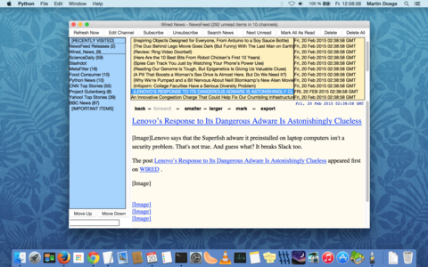
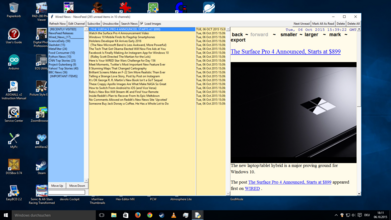
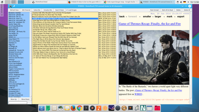
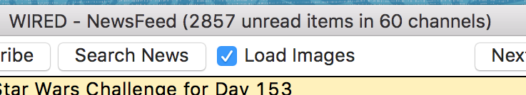

NewsFeed is an RSS/RDF/Atom reader and aggregator for UNIX-like operating systems, such as Linux, Mac OS X, FreeBSD*, or Windows. It is written in Python and uses the feedparser module for downloading and parsing feeds.
NewsFeed aims to be easy to setup and use and is something of a clone of NetNewsWire (of course it's not as Aqua-pretty on Linux, although it looks fairly decent on OS X). It only depends on Tk, no other libraries are required.
Feed contents are not rendered as HTML as in other feed readers, therefore NewsFeed is quite fast because e.g. images are not displayed in descriptions. OPML feed lists can be imported and exported, and HTML pages can also be watched for changes, not just feeds. Other features include the ability to play a notification sound when new items have arrived and custom refresh intervals.
|  |  |  |
| OS X El Capitan (with default NewsFeed layout) | Windows 10 | Linux (KDE Plasma 5; widescreen layout) |
NewsFeed provides keyboard shortcuts for all safe actions. Go through new items with the Space bar, mark all items in a feed as read with M, open an item in the browser with O (or Return), and exit the program with Escape. The basic idea for the keyboard interface is (for a right-handed person) to have the index finger on the Space bar, the middle finger on N (to mark items), the ring finger on M, and the pinky on Shift (for doing Shift-N).
Update intervals and caching times can be set on a per-feed basis. Autodiscovery of feeds is supported. A helper script for dealing with feed://-URIs is provided. Searches are possible, with search results being shown in the feed list like a regular feed and they are also updated live. This is a good way to look group topics from different feeeds. Use "Unsubscribe" to delete a search, just as you would remove a normal feed.
A nice browser for use with NewsFeed is Dillo, as it starts up pretty much instantaneously. Just set your BROWSER environment variable accordingly. Using a different browser from your regular one has the advantage that your browsing history in your main browser is not touched. NewsFeed also has its own history feed (called RECENTLY VISITED) that contains all items that you opened in the browser so you can easily find an article again.
Finally, PyAudio or Snack can play audio notifications when new items are available, but this is strictly optional.
Please see the documentation for more information.
Pros:
Cons (and some reasons why they may not amount to much):
Scripting languages in general make it easy to quickly adapt a program to one's needs. Just open the script in an editor, edit, save. I wish I could modify other programs on my desktop like that!
What sets Python apart from other scripting languages like Perl is that its syntax is very easy to read and that it includes a lot of useful modules in its standard distribution, as opposed to Perl, which relies heavily on CPAN.
Python also cleverly integrates some the greatest features from even more powerful languages like Common Lisp, Smalltalk, or Haskell, making it easy to use concepts like object-orientation, functional constructs, or exceptions, all with a minimal, easy-to-learn syntax. This mix-and-match approach in Python is something I find very refreshing.
This release introduces a workaround for a KDE GUI bug and some smaller improvements like printing enclosure sizes in MB instead of bytes.
Images in feeds can now be displayed if Pillow (a fork of the Python Imaging Library) is installed. Image loading is off by default (because it slows things down), but can be toggled via the checkbox next the "Search News" button.
Fixed the sound issue on Linux that occurred with Python 3.5 and PyAudio.
Fixes some issues with Python 3.5, e.g. item titles were broken. Audio is now disabled on Linux at the moment because there are some PyAudio issues with Python 3.5.
A desktop file and icon have been added; NewsFeed now works under Python 3.5, and a small fix for application themes with white-on-dark text.
NewsFeed now works on OS X and Windows again. Python multiprocessing (which was causing problems in combination with urllib) is now optional and only used on FreeBSD and Linux, but not on OS X and Windows. On OS X in particular multiprocessing support was always a bit flaky, depending on the Python version. And on Windows it probably never worked with NewsFeed at all.
The font scaling setting is now also saved as a preference.
Please note that while Python and Tk are often installed by default under Linux, Tkinter is sometimes a separate package. Try import Tkinter in Python to see if Tk and Tkinter are properly installed.
This software is provided under the GPL.
*Some versions of Python on FreeBSD may produce an error message when using the multiprocessing version ("This platform lacks a functioning sem_open"). You might have to recompile Python and make sure it has semaphore support as described on this forum page.
**If you happen to have the backported multiprocessing module installed, the latest version might also work on Python 2.4 and 2.5. assert sys.version >= '2.6' in newsfeed.py must be commented out then.
Send comments to Martin C. Doege
{kind=link}
{kind=link}
{kind=link}